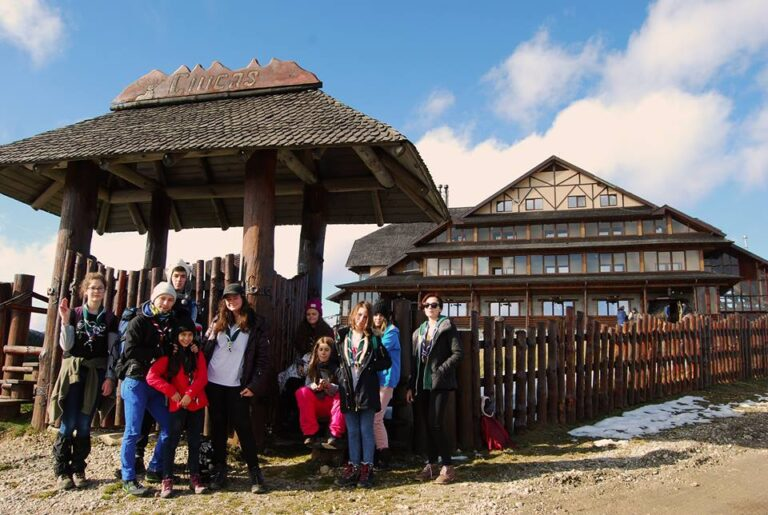

Temerarii călători: Vârful Ciucaș

“În dimineața zilei de 10 noiembrie ne-am adunat toți, cu mici întârzieri și am plecat spre munte, nerăbdători sa vedem zăpada. Drumul a fost destul de scurt, în condițiile în care nu ne-am plictisit deloc, deoarece am ascultat muzica și ne-am jucat. Pe drum am oprit la Salina Slănic,în care l-am cunoscut pe “negustor” și ne-am demonstrat încrederea pe care o avem unii în alții. Apoi am plecat spre cabană, și când am ajuns țin sa precizez ca primul lucru pe care l-am făcut a fost să bag mâna în zăpadă:)) Apoi am mâncat așa-zisa cină, patrula mea având un kilogram si jumătate de pateu. În acea seară am făcut activități interactive, printre care și “Les Loupes Garoux” și apoi ne-am culcat, deoarece trebuia sa fim odihniți pentru ziua ce avea să vină.
În următoarea zi, ne-am trezit plini de voie bună, am făcut încălzirea, am pregătit micul dejun și apoi am plecat in hike, către vârful Ciucaș. La început traseul părea ușor, dar s-a dovedit a fi mai greu, când timp de o oră am urcat “panta prostului” , până la cabana Ciucaș. Drumul pâna în vârf a fost mai greu, dar ne-am motivat unii pe alții și am ajuns până sus, unde am făcut poze și am mâncat glucoză,care a fost o binecuvântare. Drumul de întoarcere a fost ușor, am ajuns numaidecât înapoi la cabană. Apoi am mâncat grătar, care a fost ca un cadou Dumnezeiesc după hike-ul pe care îl avusesem. Și după, bineînțeles, așa cum e tradiția , ne-am jucat câteva ore bune ,pe urmă căzând lați.
În cea de-a treia zi am învățat să construim o masă cât de cât stabilă și am dezvoltat lucrul în echipă. Apoi am făcut focul pentru a prepara supă instant și după ne-am făcut fiecare curățenie în căbanuța în care am stat. Cu părere de rău, ne despărțim de acel loc minunat și ne urcăm în mașini pentru a pleca spre București. Drumul a fost liniștit, majoritatea dormind iar alții făcând enigme. Am ajuns, ne-am îmbrățișat si apoi am plecat fiecare la casa lui, eu aproape plângând că s-a terminat atât de repede această ieșire superbă. Am venit acasă cu lucruri noi învățate și cu foarte foarte multe amintiri frumoase pe care sigur nu le voi uita niciodată.” – Ana-Maria, temerar.
“Hike-ul de toamnă… prima dată când am urcat atât de sus pe un munte …
Aici Didi, nou membru al Cabanei Scout, gata să vă povestesc despre primul meu hike.
În data de 10 noiembrie am avut șansa să merg în primul meu hike alături de temerarii si seniorii Cabanei Scout. M-am trezit la ora 5 si jumătate si mi-am făcut bagajul. La 6 si jumătate am plecat spre parcul Tineretului. La 7 și un sfert, după ce ne-am organizat pe patrule, am plecat spre destinația noastră, Munții Ciucaș, cabana Silva. De aici pot spune ca a început cu adevărat hike-ul. Prima oprire a fost la un Carrefour, unde am făcut meniul pentru toate zilele din hike, apoi am cumpărat ce era nevoie. După ce ne-am asigurat masa pentru toate zilele (aveam un kilogram jumatate de pateu ), am pornit iar la drum, povestind, râzând, unii dintre noi dormind.
Următoarea oprire, salina din Slănic- Prahova. Majoritatea eram deja la a doua sau chiar a treia vizită în acea salină, si câțiva au rămas surprinși să vadă că liftul care cobora in salină, era acum căzut si nefuncțional. Poate vă întrebați cum am ajuns pana in salina dacă nu era liftul? Păi simplu, am luat un microbuz care ne-a lăsat fix la intrarea în salină. Ajunși acolo unii au inceput sa faca poze, unii se plimbau, alții căutau disperați baia.
După ce am explorat putin locul, a trebuit să ne dovedim încrederea, și anume,cineva s-a urcat pe o stâncă iar când acea persoană s-a aruncat, noi am prins-o (fără griji, nimeni nu și-a rupt nimic, s-a ales doar cu o vânătaie).
După toate acestea, am primit si prima probă ca să spun așa… Fiecare patrulă trebuia sa faca un moment artistic cu numele “Viața fără gust” si ambele patrule au decis să facă câte o sceneta de teatru. Sincer m-am amuzat copios când am făcut acea sceneta. Pe la ora 16-17 am ajuns la cabană, unde ne-au întâmpinat doi cațeluși (cațeluși e puțin spus, erau imenși). Apoi am avut o oră la dispoziție sa ne instalam si sa gândim sceneta (care apropo, a fost foarte funny). Terminând de mâncat si terminând si scenetele, am început să jucăm jocuri.
În a doua zi, am făcut încălzirea, apoi eu si patrula din care fac parte am aranjat micul dejun pentru toți, iar cealaltă patrulă s-a ocupat de prânzul pe care l-am luat pe munte. După micul dejun am plecat spre vârful Ciucaș. Un drum lung și greu de 5-6 ore la dus… dar la întors a fost mult mai ușor. Vârful era plin de zăpadă, cu un peisaj minunat.
La coborâre erau porțiuni unde ne așezam ca sa alunecăm, si alte porțiuni unde cadeam si o luam la vale. După ce am coborât din vârf ne-am oprit pentru ciocolată caldă la cabana Ciucaș. Din păcate nu am ajuns toți la cabana Ciucaș, fiindcă doua fete s-au pierdut de noi, dar le-am găsit pe drum.
În finalul drumeției, ne-am întors la cabană pentru un foc de tabără și un grătar. După cina am jucat iar jocuri.
După acea zi obositoare, ne-am culcat apoi a doua zi am luat micul dejun și am mers în pădure pentru următoarea probă, unde am construit o masă cam instabilă care a ajuns pe foc. După prânz am strâns lucrurile si am plecat spre casă. În mașină am adormit, dar m-am trezit sărind în sus iar ceilalți au râs de mine.
În concluzie a fost o experiență super faină. ”
P.S.: și acum câteva perle din hike:
“Ai un vis? Vrei o dorință” – Didi
“Își înmormântează viteza” – Ana
“Satisfacția șoferilor de a-ți închide ușa în nas e ca satisfacția mea să cobor un munte după ce l-am urcat” – Ana
“A fost fain, dar cele mai amuzante momente erau când cineva zicea cate o perlă, spre exemplu: “Blondo te bat”, “Ai o dorință? Trebuie să faci cancer înainte!”, sau logica lui Gabi: “Te uiti urat la mine, tu esti lupul.”, sau asa zisele glumițe seci pe care nu am voie să le mentionez. ” – Didi